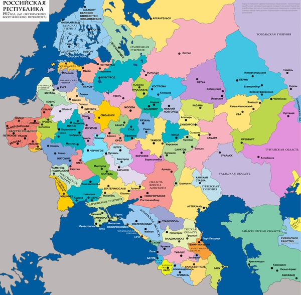
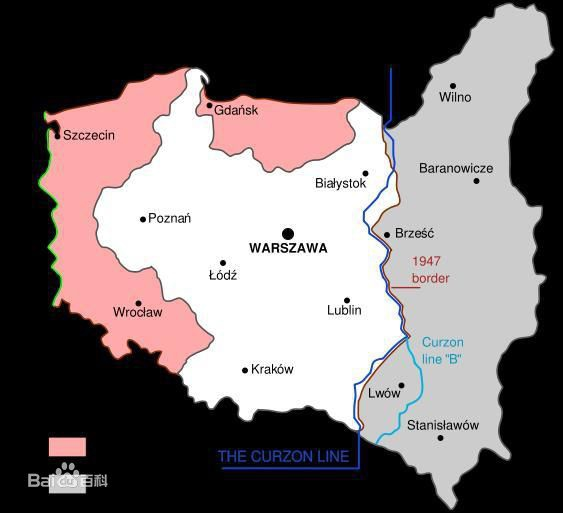
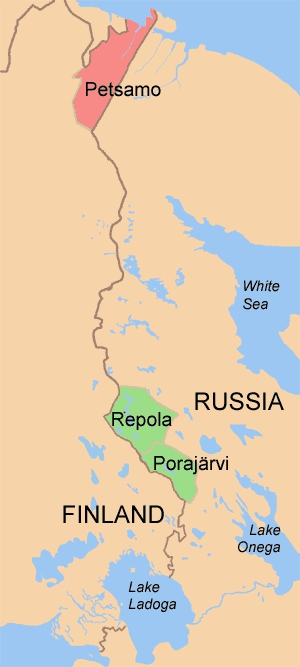
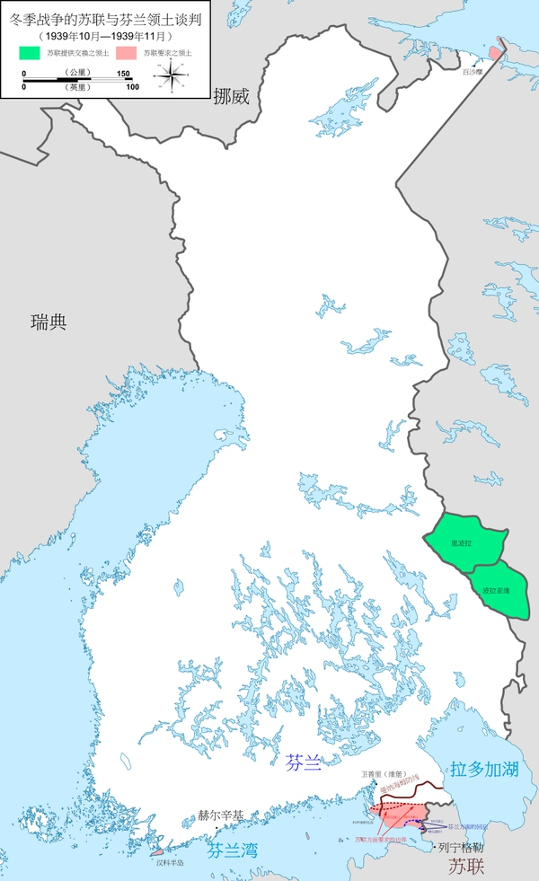

斯大林没有低估，相反，现在去看斯大林选集，可以看出，斯大林从27年坐稳了位置，天天在准备打仗，大会小会都在教育干部：帝国主义随时要来打我们，如果你们不好好工作，那我们就药丸......
他的一切政策也都是为了打仗准备的，压农业压轻工业，集中全力搞重工业搞军工业，谁有意见就杀谁：因为帝国主义随时要来打我们，如果我们不好好工作，还在忙着和你摆事实讲道理，那我们就药丸，所以，为了节约时间，先杀了再说。后人可以平反冤假错案，可以把我拉出来鞭尸，但那些事情让我们打赢战争以后再慢慢谈。结果一战时俄军装备落后到极点，夸张的说法是有些部队3个人1条枪，而二战时俄军已经有用不完的坦克了。
慕尼黑协定前，斯大林想拉法、捷一起把希特勒做掉拉倒，因为当时谁都不知道法军居然能菜到这个程度，而捷军装备还是比较精良的，苏军又有数量优势，3打1，早弄死得了。但问题是苏军怎么开过去，要么从波兰走，大波波表示除非你从老子尸体上踏过去，要么从罗马尼亚走，小罗罗表示除非你从大波波的尸体上踏过去，然后谈崩。更让斯大林觉得恶心的是，出卖捷克这么恶心的事情，你们英法强盗干了也就干了，居然不拉着老子一起来，弄啥类？
至此斯大林深感英法资产阶级亡我之心不死，没一个好东西，然后心想，你们特么卖捷克不就想把小胡子喂饱好让他出手打我这个大胡子么。于是斯大林觉得与其坐着等死，不如争取一点时间，而德国不想两线作战，两大胡子一拍即合，顺利签约。8天后二战爆发，波兰不出一个月就完蛋了，而英法坐视不管，斯大林果断拿走寇松线以东的东波兰，即苏联称的西乌克兰西白俄罗斯，这些土地“自古以来”就是俄罗斯领土。接着收走芬兰的维堡，因为这些土地“自古以来”就是俄罗斯领土。接着收走波罗的海的立、爱、拉三国，因为这些土地“自古以来”就是俄罗斯领土。接着收走罗马尼亚的比萨拉比亚，因为这些土地“自古以来”就是俄罗斯领土。
这样一来，在小胡子闪击法国以前，苏联豪取了6国土地，把国境线往西推进了几百公里。拿走的土地全部都是原沙俄领土，是这6个国家趁十月革命时期苏俄立国未稳趁火打劫拿走的（当然在6国看来这些土地“自古以来”就是他们的领土，既然大家都是“自古以来”），英法无暇东顾，德意杀得兴起，苏军在东欧耀武扬威自然没有人去管，等于白拿了那么多领土，而且是永久性的，至今都在原苏联各加盟国手里。由于苏联领土扩大，就为后来空间换时间奠定基础，然而并没有什么卵用。
这段时间里，斯大林在远东方面对日两战两胜，打消了日本北上念头，与日本在苏德战争爆发前夕签订中立条约，避免两线作战（随口承认了满洲国独立，但在苏联立场上，为换取日本中立以便能够使用百万远东军，随口说说又不费事，大不了以后出兵把满洲国灭了就是了）。
做了那么多，然后斯大林心想，一定要在英国完蛋之前整顿军队，提高军备，修建防线......因为英国还没完，海空战一直没停，且美军早晚会来，德军不可能重演一战时两线作战的错误。同时，进攻苏联的最佳时间应该是春季动手，这样春天可以往东推进一些，夏天可以决战，秋季再秋风扫落叶，而过了春季再要动手，稍微拖一拖天气就冷了，就不好办了。所以，斯大林觉得41年应该打不起来了。
你以为，你以为，全部都是你以为。就好比大胡子，小胡子，全部都是留胡子，但你留大胡子是因为你懒，人家留小胡子是因为人家文艺。文艺青年的心思，斯大林这个神棍出身的哪里会懂，于是悲剧了。
————————————————————————————————————————
以下补充下法捷苏同盟是怎么破产的：
20世纪30年代法、苏和东欧各国之间进行一系列外交活动是相当精彩的
纳粹上台后，立即激起法国的警惕。原因如下：
1，德国一旦重新崛起，对法必有一战。因为法德围绕阿尔萨斯-洛林问题打了两仗都没打明白，加上当时法国以国联名义占领萨尔，德国是肯定要讨要领土的。
2，法国不能单独抵抗德国。因为在欧洲大陆上，法国人口只有4000多万，而德国人口有7000万，如果加上散落在奥、捷、波等国的其他德意志人，那么德意志民族的人口有8000多万，是法国的两倍，因此法国必须拉拢其他盟国共同对德。
第一个想到的是英国，但英国不是欧洲大陆国家，动员和海运军队都需要时间，等英军就位法国可能已经沦陷了，因此需要最好寻找欧洲国家参与。而在欧陆上，最有实力的陆军强国，除了法德，就是苏联。
斯大林嗅出了希特勒潜在的威胁，在1934年的苏共十七大上指出：
“日本对中国发动战争并侵占了东北，使远东的关系尖锐化了；法西斯主义在德国取得胜利，复仇思想占了上风，使欧洲的关系尖锐化了；日本和德国退出国际联盟，更加推动了军备的扩充和帝国主义战争的准备。”
而在更早的1933年，即希特勒上台后不久，
苏联时任外长是有过西方流亡经历也较亲西方的李维诺夫，后者为应对德国挑战，提出了“集体安全政策”的概念，与法国的想法一拍即合，于是苏法试图联手构建旨在反德的“东方公约”，即当德国对某一缔约国开战，其他缔约国需要对德作战。但是这个公约需要有东欧国家参与，原因如下：
1，苏德当时并不接壤，一旦法德开战，苏军出兵必须经过东欧，只有得到东欧国家，特别是波兰的过境许可并给予后勤上的一系列帮助，苏法联盟才能发挥作用。
2，德国提出的领土要求不仅针对法国，还包括捷克、立陶宛、波兰等分布有德意志人的国家，如德国首先对捷、波、立动手，而这些国家没有与法苏的协约，则法苏无法对德国进行干涉。
于是，法苏两国分头行动：苏联负责拉拢波罗的海三国（立、拉、爱），三国均表示愿意参加（德国对立陶宛的梅梅尔地区有领土要求，这是写进国歌的）。法国负责拉拢英、捷、波。捷克斯洛伐克表示愿意参加（德国对苏台德地区有领土要求）。英国态度勉强，反共甚于反德，但也不想德国做大，所以法国问他支持不支持，他不说支持，但没说不干。可是，在波兰身上出了问题。
波兰与德国的领土争端在于但泽地区（波兰称格但斯克地区），面积1.6万平方公里，这个地区将德国本土与东普鲁士分割开来，使后者成为德国的飞地，所以德国一再索要。但波兰与苏联的领土争端更大。由于苏俄在1921年苏波战争中战败，被迫向波兰割让领土13.5万平方公里并赔款3000万卢布，这部分领土占波兰领土三分之一左右，波兰更怕的是苏联。
纳粹德国巧妙利用波苏矛盾，在1934年1月抢先与波兰签订了《德波互不侵犯条约》。加上1932年7月苏联已同波兰签订了《苏波互不侵犯条约》，波兰认为，条约在手，东欧我有。然后，到了1934年10月，一直同苏联外长李维诺夫谈笑风生的法国外长巴尔都遇刺身亡（南斯拉夫国王访法，一个克罗地亚刺客跑来开枪杀了南大王，顺手就把正同南大王谈笑风生的巴尔都打死了），换上了赖伐尔担任外长。
赖伐尔打开地图一看，发现：其实拉拢苏联是为了制衡德国，但欧洲并不是只有法德苏三个陆军强国，还有第四个陆军强国：意大（dai）利。如果拉意大利入伙，则不必同苏联那些马列主义者打交道，也不用牵扯波兰问题。于是在1935年1月对意签订《罗马协定》，通过出让法国在非洲利益和埃塞俄比亚主权换取墨索里尼表态反对德国。
由于法意的靠拢，苏联对法国而言就没那么重要了，于是由建立东欧反德统一战线的东方公约降格为法国同东欧国家签订双边共同防御条约。在1935年5月缔结《法苏互助条约》，规定任何一国遭“欧洲国家”侵略时，对方应出兵参战（意思是只防德不防日，因为日本暂时打不到法国）；同月，苏捷也缔结了《苏捷互助条约》，内容同上。这样，加上1923年已经缔结的《法捷互助条约》，法捷苏三国事实上已经结成旨在反德军事同盟。
然而，法国在一战中伤亡过于惨重，早已被战争吓破了胆，这和同样被一战吓坏的英国人一拍即合。事实上，法国对意妥协意味着绥靖主义已经在法抬头，加上英国的张伯伦出任首相，英法迅速接近，以至于法捷苏同盟流于形式，而没有任何实质性的军事合作。
在英国人眼里，一战后划分欧洲版图的依据是威尔逊主义，即民族自决原则，按照民族分布来划分各国版图。那么，既然德国的要求是索要德意志人占绝大多数的土地，那么人家既然谈的是威尔逊主义，既然那么讲道理，我们英国绅士只有以德服人才能以服德人。既然奥地利是德意志人的国家，那么德奥理应合并，既然苏台德都是德意志人，那就给德国好了，既然萨尔区自古以来就是德国领土，那就按公投原则决定归属啊，这不是合情合理的么？
于是，英国人和法国人坐下来一商量，觉得希特勒讲的好有道理哦，竟然无法反驳，就决心把捷克卖了拉倒（奥地利谈不上卖，因为奥地利人一致要求要加入德国）。捷克虽已做好战争准备，但当英法德意四国达成一致的时候，捷克是无法同四个列强作对的。苏联虽声称要援助捷克对德作战（因为苏捷协约仍然存在，且苏联方面声称即使法军不参战，苏军也将出兵），但捷克觉得这样一来打得过打不过不好说，捷苏共御外侮，这样做好像会让我们显得像个共产党员，这样不太好，只好怂了。而没了苏台德地区，没了法捷苏三国同盟，捷克的独立也就没了。
这样，遏制纳粹德国的最有利时机已经失去了。如果三国以不惜一战的态度，本可以阻止希特勒，即使开战，德国需要应付三线作战，困难会远大于1939年。
1939年3月，再无顾忌的希特勒进一步吞并捷克全境。感到巨大威胁的苏法准备重开谈判。但英国担心卷入欧陆战争，一直不肯加入。而苏军参战需要取道波兰或罗马尼亚，后两者同样担心趟了浑水，均拒绝苏军过境。8月21日，法国向波兰施加强大压力，声称：假如波兰拒绝苏军过境，那么法国将取消同波兰的盟约。波兰表示，我有两大互不侵犯条约在手，你取消了能咋的。
斯大林并非把赌注全下在法国人的篮子里。在8月21日谈判破裂后，斯大林很显然已经意识到苏法同盟已无可能，于是新任外长莫洛托夫在8月23日（李维诺夫被解职本身就说明斯大林对西方已失去信心）接受了德国外长里宾特洛甫提出的《苏德互不侵犯条约》，明确规定了苏联不准参加任何反德同盟，同时也划定了双方在东欧的势力范围。
至此，由于英国和波兰（波兰在慕尼黑协定签订后，一看邻居有难，果断趁火打劫，割走了捷克的捷欣地区）两大搅屎棍的努力，希特勒终于在外交战线上取得了巨大成功。然而，苏联通过这一系列事件也看出了英法色厉内荏，既然没有胆量同德国开战，自然没有勇气同苏联开战。而苏德既然已划定势力范围，那么苏联在波罗的海、芬兰、波兰和罗马尼亚的行动将毫无阻拦。以上六个国家事实上均已被英法抛弃，而只能任由苏联宰割。
===================================================================
接着再说说“自古以来”是怎么回事，先上图：

这个地图是1917年十月革命以前的俄国欧洲部分。和后来的苏联比起来，爱沙尼亚、拉脱维亚、芬兰全境，波兰、立陶宛大部，罗马尼亚、土耳其一部都是俄国领土。斯大林在同德国签订互不侵犯条约后，就要开始照着上图所示开始施工了。
第一倒霉的是我们的老朋友波兰：
十月革命后，列宁首先对德媾和，签订了丧权辱国的《布列斯特-立陶夫斯克条约》，向德国割让西部大片领土，而波兰全境则在德国控制下。此时，列宁很机智得承认波兰独立：反正波兰也不在苏俄控制下，不如把大话先说出去，让那些波兰民族主义分子好好折腾折腾德国人。
等到1918年11月11日，光棍节，德国投降，一战结束。列宁立即宣布废除了上述条约，同时下令红军西进，去抢占条约割让的领土，即白俄罗斯和乌克兰大部。而当地的德军已经撤退，成了无人管理的真空地带，一时间，波兰人、共产党、白俄罗斯人、乌克兰人各路人马争相进入，这样一来，波兰和苏俄是难免一战的。
苏波冲突在一战后一直不停，但大战从1920年4月开打，波兰推到了基辅，但被苏俄击败，后者开始反攻。这时候，我们的老朋友英国人上线，开始调停，外相寇松划了一条停火线，即“寇松线”，希望两家停火。但红军开始反攻，自然觉得波兰反动派已经一击可破，认为英帝这是亡我之心不死，根据列宁的名言：“一分钟都不要相信协约国”，断然拒绝，追击波军到华沙城下，但图哈切夫斯基败于此城下，然后又被波兰一路吊打到明斯克城下，列宁看苗头不对，果断叫停，同波兰签订了丧权辱国的《里加条约》，向波兰割让寇松线以东13.5万平方公里土地。

当时斯大林也在征波大军中，担任西南方面军军事委员（政委），自然把这笔账记下了，表示毛子报仇，廿年不晚。等到1939年9月，波兰被德国闪击，苏军果断西征，把上图割让的灰色领土全部拿了回来。
第二个倒霉的是芬兰。芬兰的情形和波兰略有不同，因为芬兰在一战前名义上不是俄国领土，而是沙皇领土。意思是说，芬兰国和俄国是两个独立的国家，但俄国沙皇兼任芬兰大公。这种状况从1808年沙俄击败瑞典获得芬兰后，持续了100多年。1917年二月革命后，沙俄倒台，临时政府上台。这时候，机智的芬兰人发现：其实我们不是俄国领土，只是因为俄国沙皇也是我们的大公，我们才接受彼得堡派来的总督的统治。那么，现在尼古拉二世已经不是沙皇了，那俄国就和我们一毛钱关系都没有了，那我们自然就独立了啊。
十月革命后，列宁向芬兰输出革命，支持芬兰的共产主义者闹革命，苏芬实质进入战争状态，但曼纳海姆领导的芬军“剿共”成功，列宁同芬兰签订了丧权辱国的《塔尔图条约》，承认芬兰独立，并割让北部港口贝柴摩，使芬兰获得了北冰洋出海口。而芬兰只是象征性得把夺取的两块不毛之地还给俄国。

随着芬兰独立，列宁格勒作为古都和全俄第二大城市就处在芬兰炮口之下。于是斯大林把芬兰人叫到莫斯科，用上图，即《塔尔图条约》中芬兰交还俄国的两块不毛之地，去换列宁格勒以北，即维堡地区的部分领土，租借汉科半岛。

这里又牵扯到了维堡问题。维堡“自古以来”就是俄国领土，古到比芬兰国的历史还要早100年。上文说到，芬兰大公国是沙俄在1808年才建立的，而维堡原来是瑞典人建立的城堡，后来在1712年被瑞典割让给了俄国，比芬兰要早近100年就加入沙俄。但在亚历山大一世沙皇就任芬兰大公时，随手就把维堡划到了芬兰（此事类似于现在的克里米亚问题，后者是赫鲁晓夫随手划给乌克兰，都是统一的国家内部的行政区划调整，造成国家分裂后的领土争端）。
斯大林认为，芬兰人必须接受。理由如下：
1，你们统治维堡只有1918年以来的22年，我们统治了200多年，理应是我们的。
2，维堡我不全要，只要一部分，而且不是白拿，当年你把刀架在我脖子上，把两块不毛之地说成风水宝地，换走我的贝柴摩，那现在我也用着两块风水宝地和你换维堡的一部分好了。
3，英法前几天刚坐着围观波兰灭亡，他们不可能来帮你。希特勒是苏联人民的老朋友，他不会来帮你。你又单挑不过我。
事实上，上文提到的“剿共英雄”曼纳海姆将军一听到斯大林的条件，立即呼吁芬兰人接受：即使苏军用10条人命换芬兰1条人命，最后亡国的还是芬兰，打什么打。但芬兰议会把这个东西否决了（可能因为英法在口头上支援了芬兰，让芬兰认为西方盟友会来支援他们）。战争中，芬军表现确实英勇，但正如老将预见到的，芬兰的抵抗除了把芬兰人打到亡国灭种，没有任何意义。而在芬兰战败后签订的《莫斯科和约》，条件就没那么宽大了，芬兰割让了更多的土地。
第三、四、五个倒霉的是立陶宛、爱沙尼亚、拉脱维亚。
如上图所示，这几个国家在一战前都是俄国领土。其中，只有立陶宛是在历史上曾经存在过的国家，而爱沙尼亚、拉脱维亚在一战前从未独立建国。十月革命后，列宁本想通过先承认独立，后建立苏维埃政权，再加入苏联的路径解决，但三国的共产主义革命都没有获得成功。在俄国内战期间，这些国家的民族主义政权既不亲共也不反共，中立立场获得列宁支持，承认了他们的独立。
但到了1940年，风云突变，6月14日，德军攻克法国巴黎，这意味着，随着法国覆灭，西线陆战基本结束，苏德战争迫在眉睫。同时，这些在一战后才发明出来的小国，其独立已经得不到任何保障。斯大林看透了这一点，断然出兵波罗的海，三国已知英法自顾不暇，已知苏德亲密无间，已知芬兰抵抗无效，只好执行不抵抗政策，并入了苏联。
第六个倒霉的是罗马尼亚。
这里又要牵扯到比萨拉比亚问题。土耳其人崛起于近东后，罗马尼亚人沦为土人附庸，建立了瓦拉几亚和摩尔多瓦两个附属国。但土耳其人又是俄罗斯人的老朋友，在一战以前就爆发了十次俄土战争。而比萨拉比亚争端就是俄土战争的产物。
第七次俄土战争，俄罗斯获胜，1812年割走比萨拉比亚。
第九次俄土战争（克里米亚战争），俄罗斯战败，1856年割让比萨拉比亚南部。
第十次俄土战争，俄罗斯获胜，1878年割回比萨拉比亚南部。
这样，到了十月革命前夕，比萨拉比亚全部领土仍是沙皇俄国领土。但十月革命后，俄国陷入内战，罗马尼亚趁机拿回了比萨拉比亚。同样是1940年6月，罗马尼亚人感到压力山大：斯大林向他们提出，要求收回比萨拉比亚，同时，斯大林算了算，从1918年到1940年，比萨拉比亚被罗马尼亚占了22年，尼玛就算把它放在余额宝里也翻了一倍啊，我们共产党人宅心仁厚，你们就拿半个布科维纳省当利息好了。
此时，匈牙利人正追在希特勒后面，找德国人评理，要罗马尼亚交出北特兰西瓦尼亚。保加利亚人也跑去找希特勒，要德国人评理，让罗马尼亚交出南多布罗加。罗马尼亚自巴尔干战争以来，不断依靠站队的艺术，先割保加利亚，再割匈牙利，再割俄罗斯，终于收到回报，遭到东欧国家群嘲，在三个月内交出了一半国土。


评论数:526
赞同数:13583
更新时间:2016-08-10